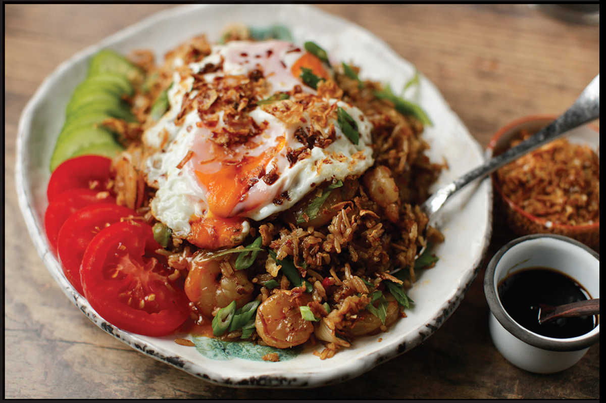

NASI GORENG: THE FUNKIEST OF FRIED RICES
Yield Serves 4 Active Time 30 minutes Total Time 30 minutes |
If using fresh rice, rinse the rice well before cooking, and once cooked, transfer it to a rimmed baking sheet set by a breezy window or under a fan for 1 hour before continuing with step 2. |
INGREDIENTS
For the Spice Paste:
1 small shallot (about 1 ounce/30 g), roughly chopped
2 medium garlic cloves (5 g), smashed with the side of a knife
2 fresh red or green Thai bird chiles or 1 serrano chile, roughly chopped, more or less, according to your spice tolerance
Kosher salt
½ teaspoon terasi, belacan, or other Asian shrimp paste (optional)
For the Rice:
3 tablespoons (45 ml) peanut, rice bran, or other neutral oil
4 to 6 ounces (120 to 180 g) cooked shredded chicken breast or small whole shrimp (optional)
2 cups cooked jasmine rice (12 ounces/340 g) (see Note)
1½ tablespoons (22.5 ml) Kecap Manis (here)
2 scallions, sliced into ¼-inch pieces on a bias
Freshly ground white pepper
To Serve:
4 Extra-Crispy Fried Eggs (optional, here)
Fried shallots, store-bought or homemade (here)
1 small tomato, sliced
1 small cucumber, thinly sliced
Indonesia’s version of fried rice, nasi goreng, has two unique flavorings. The first is kecap manis, a sweetened soy sauce (whose name comes from the same root word as Western ketchup), which adds sweetness and warm spice notes to the rice. The second is terasi, the Indonesian version of the Malaysian belacan, or shrimp paste. It’s potent stuff. While fish sauce has the ability to meld into the background, providing umami oomph without overt fishy aromas, when you include shrimp paste in a dish, you’re going to know it’s there. It’s not for everyone, but I strongly urge you to try it, because once you get a taste for it, it’s addictive in all kinds of dishes.
Recipes for nasi goreng are all over the map, but the most delicious (and interesting) technique I’ve seen was from Indonesian Serious Eats contributor Pat Tanumihardja, who makes hers by first pounding some aromatics into a curry-like paste in a mortar and pestle. Any technique that uses the mortar and pestle is alright by me, so that’s how I’ve made my nasi goreng ever since.

DIRECTIONS
1 For the Spice Paste: Combine the shallots, garlic, and chiles in the bowl of a mortar and pestle and add a pinch of kosher salt. Pound until a chunky paste is formed. Add the shrimp paste and grind in a circular motion until homogenous.
2 If using day-old rice (see Note), transfer it to a medium bowl and break the rice up with your hands into individual grains before proceeding.
3 For the Rice: Heat 2 tablespoons (30 ml) of the oil in a wok over medium heat until shimmering. Add the spice paste and cook, stirring constantly until the spice mixture breaks and starts to darken, about 2 minutes. Add the chicken or shrimp (if using) and stir-fry until the chicken is heated through or the shrimp are cooked. Transfer the contents of the wok to a separate bowl and wipe it out.
4 Return the wok to high heat until lightly smoking. Add the remaining tablespoon (15 ml) oil and swirl to coat. Add the rice and cook, stirring and tossing, until the rice is pale brown, toasted, and has a slightly chewy texture, about 4 minutes. Return the chicken or shrimp to the rice and toss to incorporate.
5 Add the kecap manis and scallions, reserving some scallions for garnish. Cook, stirring and tossing constantly until the scallions are lightly softened and everything is piping hot, about 1 minute.
6 To Serve: Transfer to a serving platter and serve immediately with Really Fried Eggs, a sprinkle of fried shallots and the reserved sliced scallions, and tomato slices, cucumber slices, and extra kecap manis on the side.